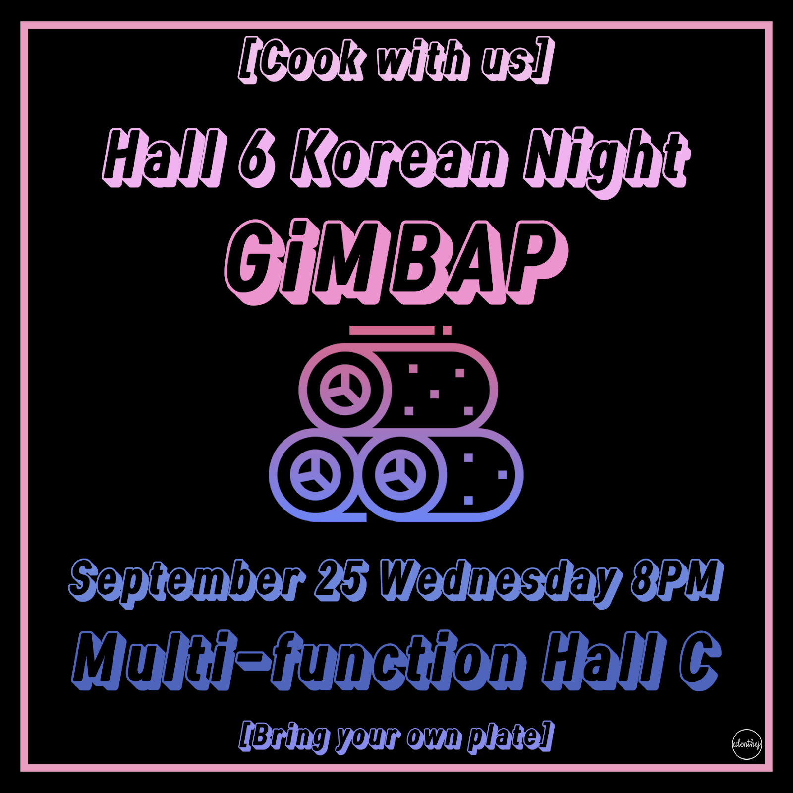

div id="mb">
Korean Night
As the semester has begun, residents of LEE SHAU KEE hall gets a chance to
share their own home culture. Student Initiated Activities (or SIA) is an
activity or workshop one of the ways to introduce their culture and
represent own home country.
The first official SIA was organized by Korean in hall6, held on the 25th
of September. Although it was on Wednesday, there were many participants
to get to know the culture. On that day, Koreans has prepared the Kimbap,
share the recipe with the participants. They had their sessions divided
into three; get to know the ingredients, way of making Kimbap, and table
manners. Yeonah and Ooreen have been the presenter to show other
procedures. When coming to make a Kimbap, Eden demonstrated how to make.
Other organizers, Ella, Chan Woo, and Jinyoung has been going around to
give out ingredients.
Both organizers and participants had fun making Kimbap, and it was a great
SIA to start the semester.
